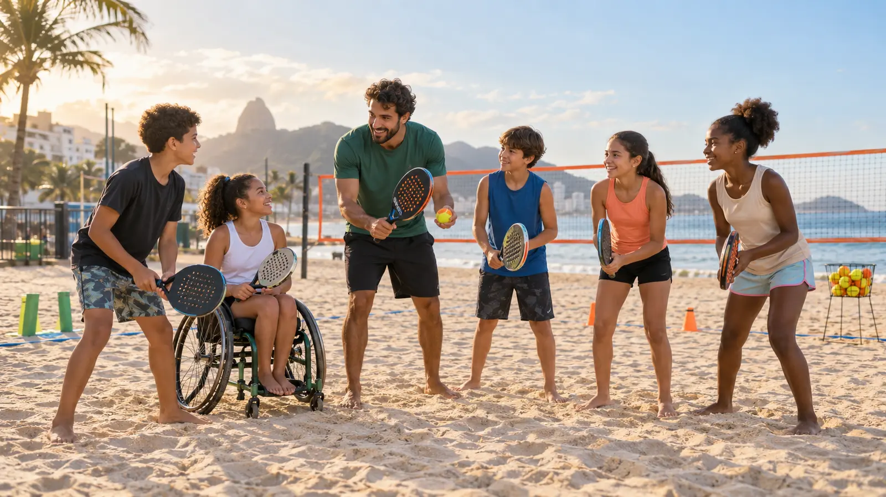

Beach Tennis para Todos
Aulas gratuitas e inclusivas que usam o beach tennis para promover saúde, convivência e novas oportunidades.
O propósito
O projeto oferece acesso ao beach tennis para crianças e adolescentes, independentemente de sua experiência ou condição financeira.
Na areia, cada participante desenvolve coordenação motora, equilíbrio, agilidade e hábitos saudáveis em um ambiente seguro e acolhedor.
Como são as aulas
- Iniciação ao beach tennis de forma lúdica;
- Exercícios de movimento, equilíbrio e coordenação;
- Atividades em duplas e em grupo;
- Acompanhamento de educadores e voluntários;
- Respeito ao ritmo e às necessidades de cada participante.
Mais do que aprender um esporte
O beach tennis ajuda cada criança e adolescente a perceber suas próprias capacidades, lidar com desafios e construir vínculos positivos. O jogo ensina cooperação, respeito às regras, concentração e confiança.
Quero participar